1Inloggen en meldingen aanzetten
- Open beheer.html (de link die je hebt gekregen) en vul je beheercode in.
- Zet de pagina op je beginscherm, dan werkt hij als een app:
- Android (Chrome): menu ⋮ → App installeren of Toevoegen aan startscherm.
- iPhone (Safari): deelknop □↑ → Zet op beginscherm. Open de app daarna vanaf het beginscherm.
- Tik bovenaan het Overzicht op 🔔 Meldingen aanzetten. Dan krijg je een bericht op je telefoon bij een ziekmelding, een vrij-aanvraag, een ruil of een rooster dat klaarstaat.
2Hoe een maand verloopt
Er zijn twee soorten werk die los van elkaar lopen: het zalencentrum (feesten) en de cafetaria (vaste diensten). De app doet het meeste vanzelf; jij kijkt na en drukt op Versturen.
🎉 Zalencentrum – per feest
- Jij zet het feest erinmet datum, tijden en hoeveel mensen er nodig zijn.
- Oproepkrachten krijgen een berichten geven aan of ze kunnen (standaard 7 dagen de tijd). Twee dagen voor het einde krijgt wie nog niet reageerde een herinnering.
- Na de einddatum deelt de app het feest ineerst vast personeel, daarna de oproepkrachten die “kan” zeiden, eerlijk verdeeld.
- Jij kijkt het naen past aan wat je anders wilt.
- Jij verstuurt hetpas dan ziet het personeel het en krijgen de ingeplande mensen een bericht.
🍟 Cafetaria – per maand, in 3 stappen
- ± 3 weken voor de nieuwe maand: voorlopig roosterMensen met contracturen of vaste werkdagen worden ingepland. Zij zien hun diensten al (grijs) en kunnen bij Beschikbaar extra diensten kiezen.
- Stap 2: open diensten naar de oproepkrachtenDe extra’s worden toegekend. Wat nog open is, gaat naar de oproepkrachten; zij zetten de schuif op “Ik kan”.
- Stap 3: oproepkrachten ingeplandWie “Ik kan” zei wordt ingepland. Iedereen krijgt een herinnering voor wat nog open is.
- Rooster klaar: jij kijkt het na en verstuurt hetJe krijgt een bericht en ziet het bij Te doen.
Hoeveel dagen van tevoren elke stap komt, stel je in bij Instellingen → Cafetaria in stappen.
↑ naar boven3Overzicht: wat moet ik doen?
Het Overzicht is je startpagina. Begin hier elke dag.
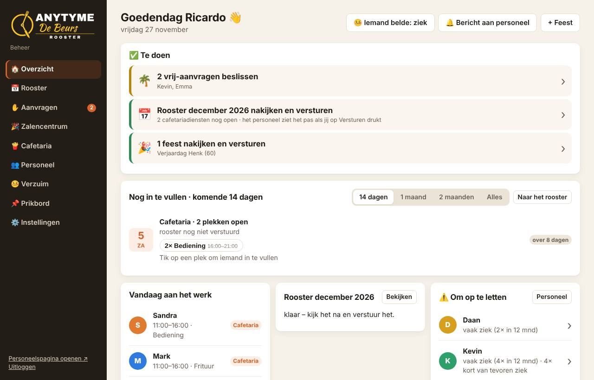
✅ Te doen
Een lijstje van alles wat op jou wacht. Tik op een regel en je komt meteen op de goede plek. Bijvoorbeeld:
- 🤒 Ziekmelding bevestigen: iemand heeft zich ziek gemeld.
- 🔴 Open plekken in de komende 3 dagen: die moeten echt nog ingevuld worden.
- 🌴 Vrij-aanvragen en 🔁 ruilen die op jouw beslissing wachten.
- 📅 Cafetariarooster … nakijken en versturen: tik erop en je staat meteen in het cafetariarooster van die maand.
- 🎉 Feesten nakijken en versturen: ingedeeld, maar het personeel ziet ze nog niet.
- 🎉 Oud en nieuw (do 31 dec): 10 plekken open: een verstuurd feest dat nog niet vol is. Tik erop om het feest te openen.
Nog in te vullen
Per dag één regel met de open plekken als knopjes, bijvoorbeeld 2× Frituur 17:00–19:00. Tik op een knopje om iemand in te vullen. Een rood knopje betekent: niemand heeft die functie en is vrij.
Met de knoppen 14 dagen 1 maand 2 maanden Alles kies je hoe ver je vooruit kijkt. De app onthoudt je keuze.
Knoppen bovenaan
- 🤒 Iemand belde: ziek: als iemand je belt in plaats van het in de app te doen. Zie Aanvragen.
- 🔔 Bericht aan personeel: stuur iedereen (of één persoon) een bericht in de app.
- + Feest: meteen een nieuw feest inzetten.
Verder op het Overzicht: wie vandaag werkt, hoe het met het rooster van volgende maand staat, wie aandacht nodig heeft (bijv. vaak ziek) en de komende feesten.
↑ naar boven4Rooster nakijken en versturen
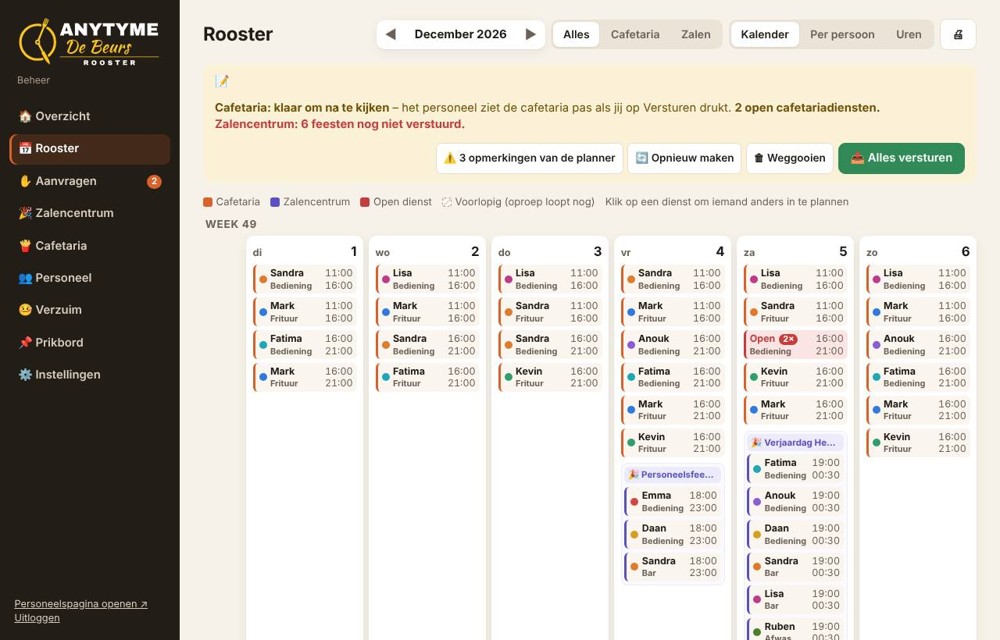
Rondkijken
- ◀ ▶ naast de maand: vorige of volgende maand.
- Alles / Cafetaria / Zalen: welk deel je ziet. Let op: de knoppen voor versturen en terugtrekken volgen dit tabblad.
- Kalender: per dag wie er werkt. Rood = open dienst. Gestreept = voorlopig (de oproep loopt nog).
- Per persoon: per medewerker de diensten en uren, handig om te zien of iemand te veel of te weinig heeft.
- Uren: gewerkte uren per persoon, met Exporteer voor Excel (salarisadministratie).
- 🖨️ rechtsboven: het rooster afdrukken.
Iemand anders inplannen
- Tik op een dienst in de kalender.
- Je ziet wie het kan doen; de beste keuze staat bovenaan. Mensen die niet kunnen (vrij, al ingepland, verkeerde functie) staan er met de reden bij.
- Kies iemand, of kies open laten. Is het rooster al verstuurd, dan krijgen de betrokkenen vanzelf een bericht.
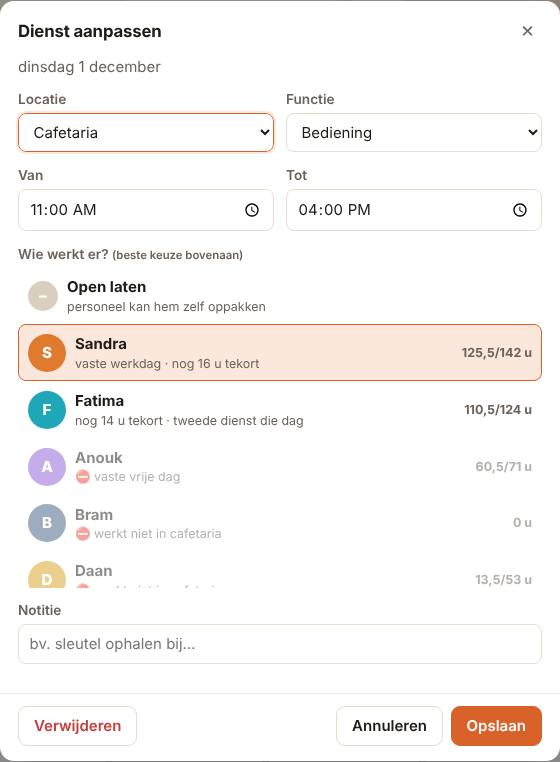
Versturen
Zolang je niet op versturen drukt, ziet het personeel niets. De groene knop hangt af van het tabblad:
| Tabblad | Knop | Wat gebeurt er |
|---|---|---|
| Cafetaria | 📤 Cafetaria versturen | Alleen de cafetaria wordt zichtbaar. |
| Zalen | 📤 Zalencentrum versturen | Alleen de feesten van die maand worden zichtbaar. |
| Alles | 📤 Alles versturen | Allebei. |
Iedereen die ingepland is krijgt een bericht, bijvoorbeeld “Je bent 14× ingeroosterd (68,5 uur). Eerste dienst: donderdag 3 december.” Daarna kun je met één tik ook een bericht in de WhatsApp-groep zetten.
Terugtrekken, opnieuw maken, weggooien
- ↩︎ Cafetaria/Zalencentrum/Alles terugtrekken: het personeel ziet het weer niet, tot je opnieuw verstuurt. De indeling blijft staan en er gaan geen berichten uit.
- 🔄 Opnieuw maken: de app maakt het cafetariarooster van die maand opnieuw. Je eigen aanpassingen gaan dan verloren.
- 🗑 Weggooien: het (nog niet verstuurde) rooster van die maand verwijderen.
5Zalencentrum: feesten
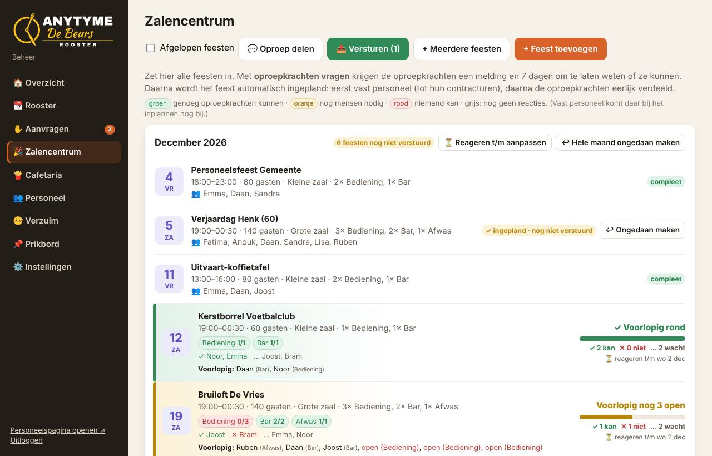
Een feest inzetten
- Tik op + Feest toevoegen.
- Vul de naam, datum, van/tot, het aantal gasten en de zaal in.
- Bij Benodigd personeel: tik op ✨ Voorstel op basis van gasten, of vul zelf per functie in hoeveel mensen er nodig zijn. Begint een functie later of stopt die eerder? Vul dan een eigen begin- of eindtijd in.
- Oproepkrachten vragen staat standaard aan, met de datum tot wanneer ze kunnen reageren. Zet het uit als je het feest meteen wilt laten indelen.
- Sta je zelf op een plek, of heb je iemand ingehuurd? Zet dat bij 📌 Vooraf indelen. Die plekken staan dan vast; de rest wordt eromheen verdeeld.
- Tik op Opslaan. De oproepkrachten met een passende functie krijgen meteen een bericht.
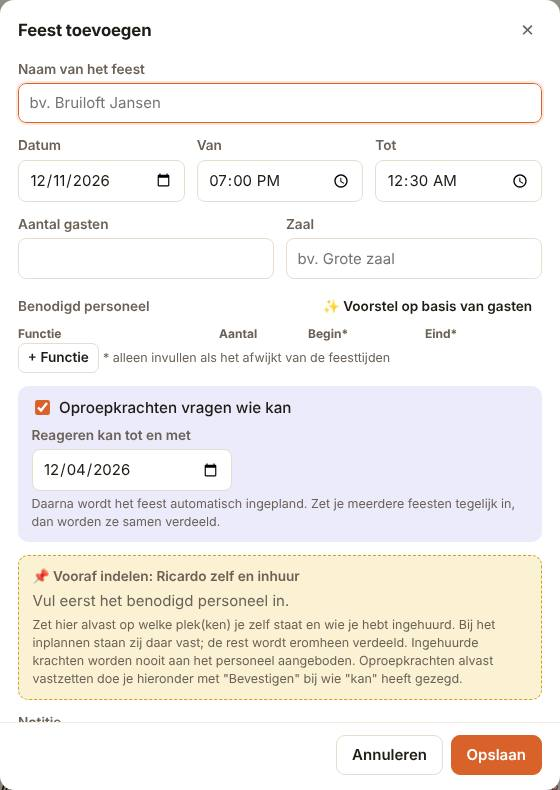
De oproep volgen
Zolang de oproep loopt, zie je per feest hoe het ervoor staat:
- groen genoeg oproepkrachten kunnen · oranje nog mensen nodig · rood niemand kan · grijs: nog geen reacties.
- Onder het feest: hoeveel mensen kan, niet en wacht (nog niet gereageerd), en tot wanneer ze kunnen reageren.
Handige knoppen:
- 💬 Oproep delen: zet de oproep ook in de WhatsApp-groep.
- ⏳ Reageren t/m aanpassen (bovenaan de maand): verschuif de einddatum voor alle lopende feesten van die maand tegelijk.
- In het feest zelf: Nu indelen als je niet wilt wachten tot de einddatum.
Verschillende begintijden (bijv. carnaval)
Moet de ene barman om 18:00 beginnen en de andere om 20:00? Dat kan op twee manieren, ook als het feest al is aangemaakt:
- Bij het aanmaken of wijzigen: zet bij Benodigd personeel twee regels voor dezelfde functie, bijv. Bar zaal 1× 18:00 en Bar zaal 1× 20:00. Begin/eind leeg = de tijden van het feest.
- In de voorspelling (Zo staat het nu), terwijl de oproep nog loopt: pas bij een plek de tijd aan. De app splitst de regel dan vanzelf. Bij wie al vaststaat (🔒 bevestigd, ⭐ jij, 🧑🍳 inhuur) leg je zo een eigen tijd voor die persoon vast.
Die tijden blijven staan bij het indelen. Na het indelen kun je per persoon nog steeds de tijd aanpassen.
Indeling nakijken en versturen
- Na de einddatum staat het feest op ✓ ingepland · nog niet verstuurd en bij Te doen.
- Tik op het feest. Je ziet per functie wie er staat.
- Tik op een naam om iemand anders te kiezen of twee mensen te laten wisselen.
- Pas per persoon de begin- en eindtijd aan als iemand later begint of eerder weg mag. Kwam iemand te laat? Pas het achteraf aan; het telt mee bij Uren.
- Tik op 📤 Versturen (in het feest of bovenaan Zalencentrum), of verstuur de hele maand via Rooster → Zalen.
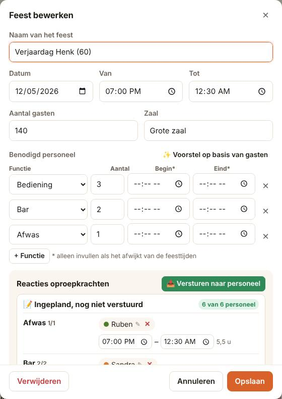
Ongedaan maken
- ↩ Ongedaan maken naast een feest, of ↩ Hele maand ongedaan maken bovenaan de maand.
- Bij een feest met oproep gaat de oproep weer open; de reacties blijven staan.
- Bij een feest zonder oproep worden de mensen eraf gehaald en blijven de plekken open, zodat je ze zelf kunt invullen.
- Was het feest al verstuurd, dan krijgt wie erop stond één bericht dat de dienst vervalt. In het venster zie je vooraf welke feesten het zijn en hoeveel mensen een bericht krijgen.
6Cafetaria: vaste diensten
Hier staat per weekdag welke diensten er altijd zijn. Daaruit maakt de app elke maand het cafetariarooster.
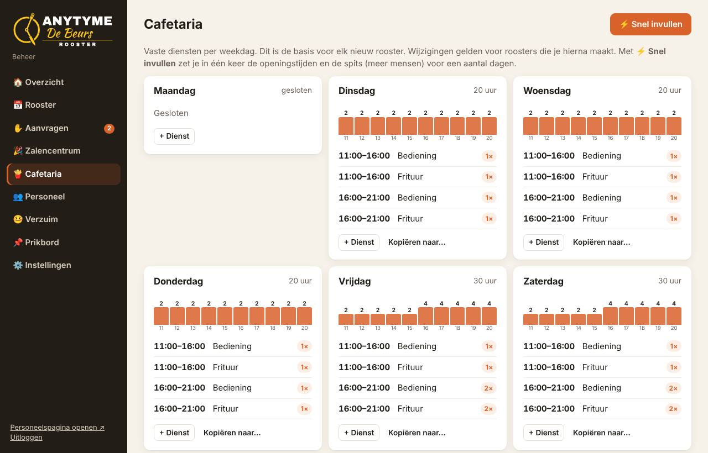
⚡ Snel invullen (openingstijden en spits)
- Tik op ⚡ Snel invullen.
- Kies de dagen, bijvoorbeeld di t/m vr. Maandag dicht? Dan vink je maandag niet aan.
- Vul de openingstijden in (bijv. 10:00–20:00), wanneer de dienst wisselt (bijv. 15:00; leeg = één lange dienst) en de spits (bijv. 17:00–20:00).
- Vul per functie in hoeveel mensen er normaal staan en hoeveel er extra in de spits bij komen.
- Opslaan. Doe het daarna nog een keer voor de dagen met andere tijden, zoals za en zo 11:00–20:00.
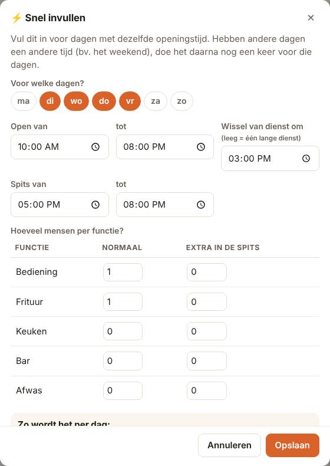
Losse diensten aanpassen kan altijd door erop te tikken. Bij Sluitingsdagen zet je dagen dat de cafetaria dicht is (feestdagen, vakantie); dan worden er geen diensten gemaakt.
↑ naar boven7Aanvragen: vrij, ruilen, ziek
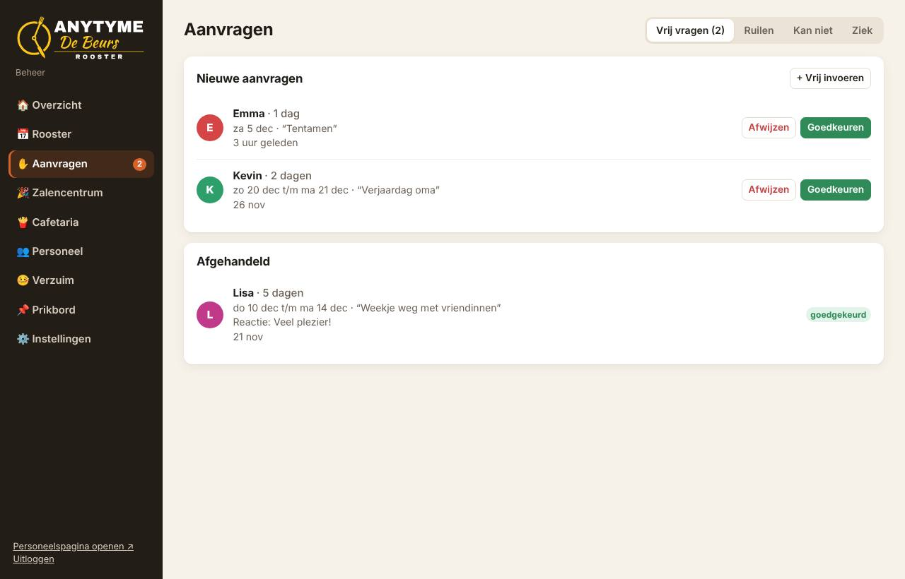
🌴 Vrij
Tik op Goedkeuren of Afwijzen (met een reden die de medewerker ziet). Stond die persoon al ingepland, dan zoekt de app zelf een vervanger en laat zien wie dat wordt.
🔁 Ruilen
Als twee collega’s het eens zijn, komt de ruil bij jou. Pas als jij goedkeurt is er echt geruild. (Wil je dit niet zelf goedkeuren, dan kun je dat uitzetten bij Instellingen.)
🤒 Ziek
- Meldt iemand zich ziek in de app, dan krijg je een bericht en belt die persoon je.
- Tik bij Aanvragen → Ziek op Bevestigen.
- Per dienst stelt de app een vervanger voor. Kies je open laten, dan krijgen collega’s die kunnen een bericht om hem op te pakken.
- Is de persoon weer beter, dan meldt die zich beter in de app en belt je even (of jij meldt hem of haar beter).
Belt iemand je? Tik dan op 🤒 Iemand belde: ziek, kies wie, welke diensten vervallen en hoe laat er gebeld werd. Dat telt mee voor “hoe kort van tevoren”.
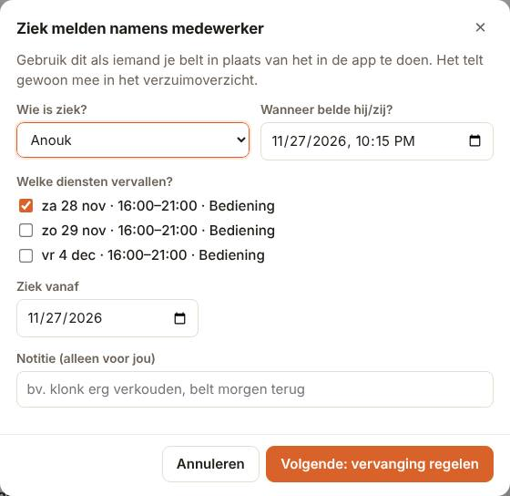
8Personeel
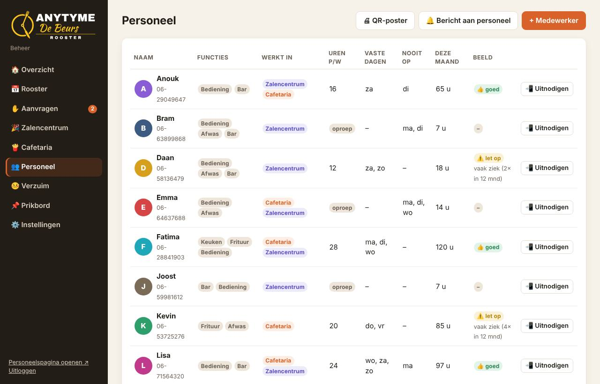
Iemand toevoegen of aanpassen
| Veld | Waarvoor |
|---|---|
| Naam, Inlogcode (PIN) | Hiermee logt de medewerker in. Na het opslaan kun je de link en PIN meteen via WhatsApp sturen. |
| Functies | Wat iemand kan (Bediening, Bar zaal, Frituur…). Grijs erachter staat wat er vanzelf bij hoort (zie Instellingen). |
| Werkt in | Cafetaria, zalencentrum of allebei. |
| Contracturen per week | 0 = oproepkracht. Bij vast personeel probeert de app het contract vol te plannen. |
| Vaste werkdagen | Krijgt voorrang op deze dagen. Ook iemand met 0 uur wordt dan op die dagen in de cafetaria gepland. |
| Liever niet op / Kan nooit op | “Liever niet” alleen als het echt nodig is; “Kan nooit” wordt nooit ingepland. |
| Max. dagen per week | Meer dagen plant de app niet. |
| Ervaring | 🌱 Nieuw · ⭐ Ervaren · 👑 Kan een dienst leiden. Nieuwe mensen zet de planner niet zonder ervaren collega in een dienst. |
| Geboortedatum | Voor de leeftijd. Onder 18 telt als “jong”: niet zonder ervaren collega van 18+, en niet na 23:00 (onder 16: niet na 19:00). |
| Niveau ★1–5 | Hoe snel en goed iemand werkt. De planner mengt sterke en minder sterke mensen, zodat de langzame niet samen in één dienst staan. Ook onder de 18 maakt dit verschil. |
| 🤒 Langdurig ziek | Wordt niet ingeroosterd en krijgt geen oproepen tot je het uitzet. Collega’s zien dit niet. In de lijst staat een rood label langdurig ziek. |
| Notitie | Alleen voor jou zichtbaar. |
De personeelskaart
Tik op een naam voor alles over die persoon: uren tegenover het contract, gewerkte diensten, hoe vaak ziek (en hoe kort van tevoren), hoe vaak en hoe snel iemand reageert op oproepen, opgepakte open diensten, ruilen en vrije dagen. Bovenaan staat een korte samenvatting: 👍 goed of ⚠️ let op.
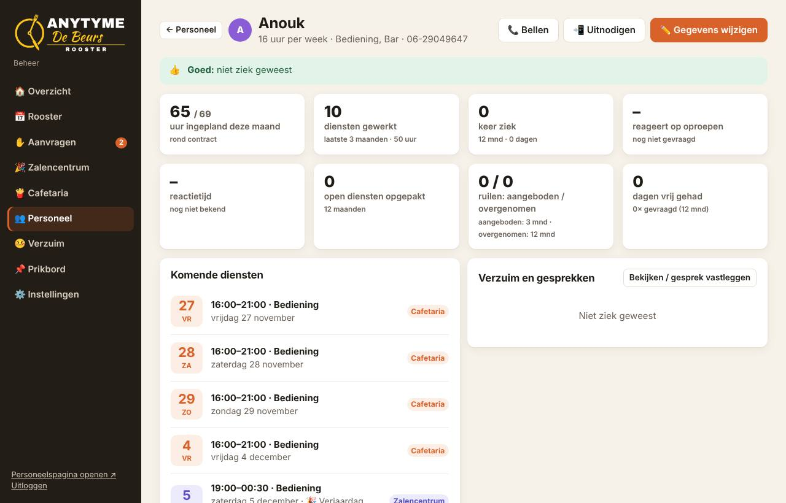
9Verzuim
Per medewerker over de afgelopen 12 maanden: aantal ziekmeldingen, ziektedagen, gemiste diensten en hoe lang van tevoren er gemiddeld gemeld werd. Er staan signalen bij, zoals gesprek aanbevolen, vaak kort van tevoren of vaak op zondag.
Tik op een naam om de geschiedenis te zien en gesprekken en afspraken vast te leggen. Het personeel ziet dit niet.
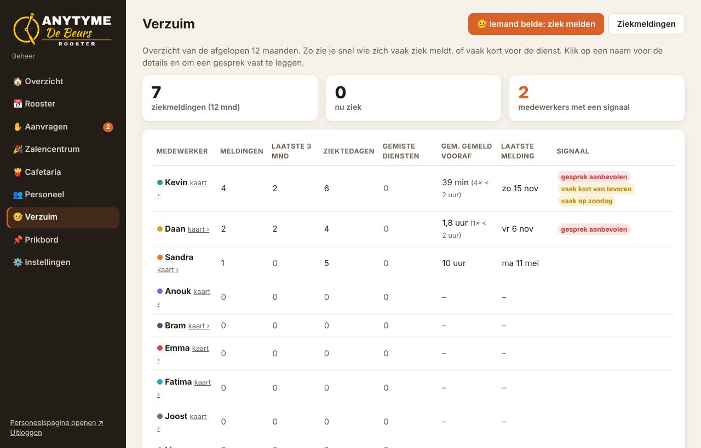
10Prikbord en berichten
Op het Prikbord zet je mededelingen die het personeel bovenaan bij Mijn diensten ziet (bijv. “Zaterdag inventarisatie”). Met 🔔 Bericht aan personeel op het Overzicht stuur je een bericht dat meteen als melding binnenkomt.
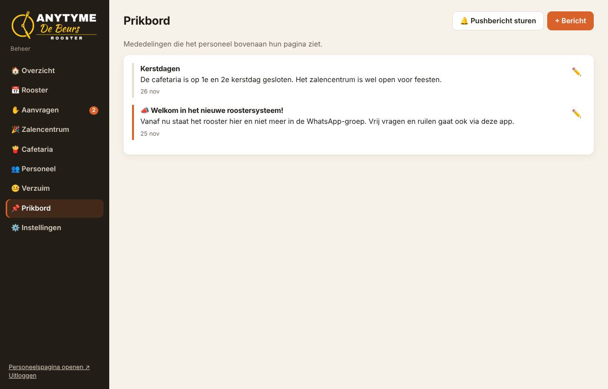
11Instellingen
- Algemeen: naam bedrijf, beheercode, wie het personeel belt bij ziekte en het telefoonnummer daarvoor.
- Functies: de lijst met functies. Bij Wie dit kan, kan ook… zet je bijvoorbeeld: wie Bar zaal kan, kan ook Bar boven. Dan hoef je dat niet bij iedereen apart aan te vinken.
- Ploeg samenstellen: leeftijd, ervaring en niveau: hoe belangrijk de planner het mengen van sterk/minder sterk en nieuw/ervaren vindt, de werktijden voor jongeren (aan/uit) en per functie een minimumleeftijd (bijv. Bar 18).
- Oproepkrachten krijgen … dagen om te reageren op nieuwe feesten (standaard 7).
- Cafetaria in stappen: hoeveel dagen van tevoren elke stap komt (zie Hoe een maand verloopt).
- Standaard bezetting feesten: hiermee rekent Voorstel op basis van gasten, bijv. 1 bediening per 40 gasten.
- Automatisch versturen: wil je niet eerst nakijken, dan kan de app het rooster meteen versturen. Aanrader: laat dit uit.
- Back-up downloaden: een kopie van alles. Doe dit af en toe.
- Geavanceerd: hoe slim de planner rekent. Alleen aanpassen als het echt nodig is.
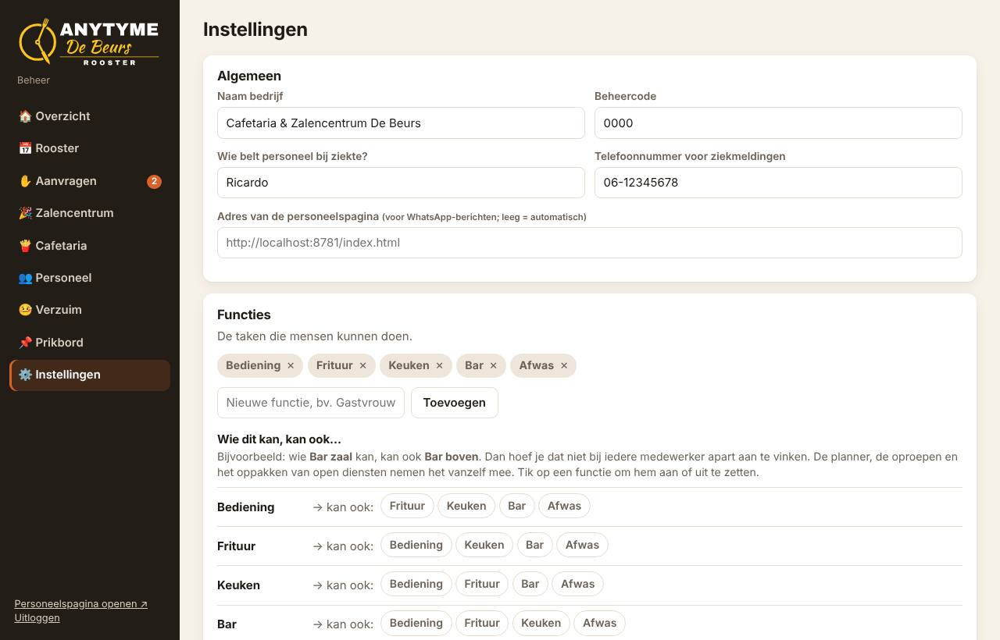
12Vaak gestelde vragen
Het personeel ziet het rooster niet.
Je hebt het nog niet verstuurd. Kijk bij Te doen of ga naar Rooster, kies het juiste tabblad (Cafetaria, Zalen of Alles) en tik op de groene knop Versturen.
Er staan heel veel open cafetariadiensten.
De app plant in de cafetaria alleen mensen met contracturen of vaste werkdagen vanzelf in. Geef je vaste mensen hun contracturen en vaste werkdagen bij Personeel en tik daarna bij Rooster → Cafetaria op Opnieuw maken. Oproepkrachten kunnen de overige diensten zelf oppakken.
Waarom staat een oproepkracht niet op een feest?
Op een feest met oproep worden alleen oproepkrachten ingepland die “kan” hebben gezegd. Wie niet reageerde of “kan niet” zei, komt er niet op. Je kunt iemand altijd zelf op een plek zetten door op de plek te tikken.
Ik wil een verstuurd feest of de hele maand terugdraaien.
Bij Zalencentrum: ↩ Ongedaan maken naast het feest, of ↩ Hele maand ongedaan maken bovenaan de maand. Alleen tijdelijk verbergen zonder de indeling kwijt te raken? Gebruik dan Rooster → Zalen → Zalencentrum terugtrekken.
De oproepkrachten hebben meer tijd nodig om te reageren.
Bij Zalencentrum bovenaan de maand: ⏳ Reageren t/m aanpassen. Voor één feest: open het feest en pas Reageren kan tot en met aan.
Ik krijg geen meldingen op mijn telefoon.
Zet ze aan via 🔔 Meldingen aanzetten op het Overzicht. Op een iPhone werkt dat alleen als je de app eerst op het beginscherm zet en hem vanaf daar opent.
Iemand kan niet inloggen.
Controleer de PIN bij Personeel en stuur hem opnieuw. Na 10 foute pogingen moet de persoon 15 minuten wachten.
Wie ziet wat?
Het personeel ziet alleen het verstuurde rooster, hun eigen gegevens en berichten. Ze zien geen PIN-codes, notities, gesprekken of ziektegeschiedenis van collega’s.